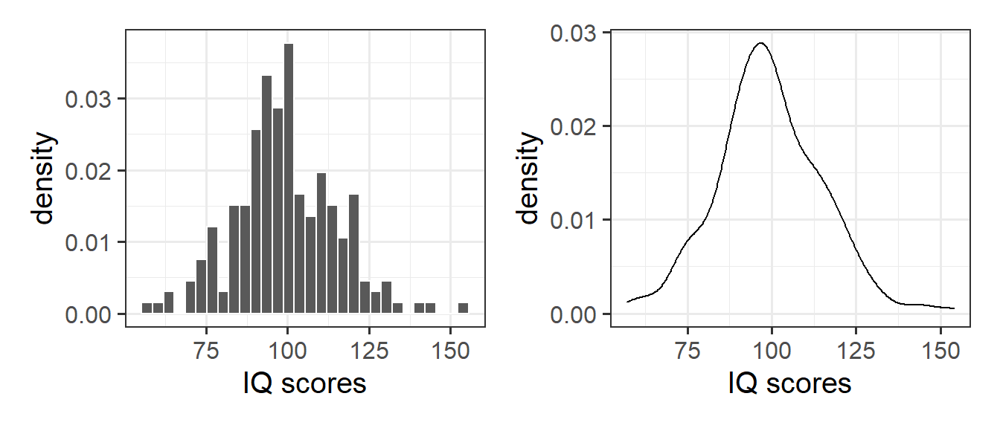
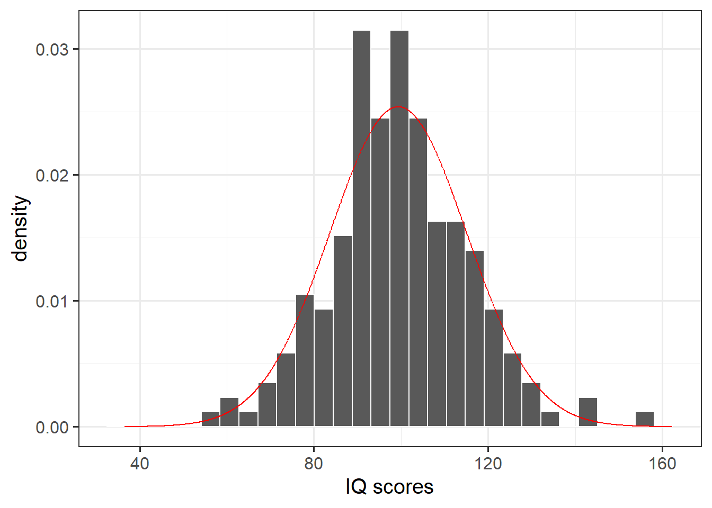

| Variable Name | Description |
|---|---|
| Bill | Size of the bill (in dollars) |
| Tip | Size of the tip (in dollars) |
| Credit | Paid with a credit card? n or y |
| Guests | Number of people in the group |
| Day | Day of the week: m=Monday, t=Tuesday, w=Wednesday, th=Thursday, or f=Friday |
| Server | Code for specific waiter/waitress: A, B, or C |
| PctTip | Tip as a percentage of the bill |
| HadCoffee | Number of guests in the group who had coffee |
| IQ1 | Score on IQ test for guest 1 |
| IQ2 | Score on IQ test for guest 2 |
Random Variables (Continuous)
Semester 1 - Week 10
Instructions Recap - Formative Report B
In this block of the course (weeks 7-11), you should produce a PDF report using Rmarkdown for which you will receive formative feedback in week 12.
The report should not include any reference to R code or functions, but be written or a generic reader who is only assumed to have a basic statistical understanding without any R knowledge. You should also avoid any R code output or printout in the PDF file.
You will be required to submit a PDF file by 12 noon on Friday the 2nd of December 2022 via Learn. One person needs to submit on behalf of your group.
-
The report should be at most 6 pages long. At the end of the report, you are allowed two appendices which both don’t count towards the page limit.
- Appendix A will contain any tables or figures which you cannot fit in the page limit (no text allowed)
- Appendix B will contain the code to reproduce the report results (just like Formative Report A).
No extensions allowed. As this is group-based work, no extensions are possible.
Formative report B - Data
Hollywood Movies. At the link https://uoepsy.github.io/data/hollywood_movies_subset.csv you will find data on Hollywood movies released between 2012 and 2018 from the top 5 lead studios and top 10 genres. The following variables were recorded:
-
Movie: Title of the movie -
LeadStudio: Primary U.S. distributor of the movie -
RottenTomatoes: Rotten Tomatoes rating (critics) -
AudienceScore: Audience rating (via Rotten Tomatoes) -
Genre: One of Action Adventure, Black Comedy, Comedy, Concert, Documentary, Drama, Horror, Musical, Romantic Comedy, Thriller, or Western -
TheatersOpenWeek: Number of screens for opening weekend -
OpeningWeekend: Opening weekend gross (in millions) -
BOAvgOpenWeekend: Average box office income per theater, opening weekend -
Budget: Production budget (in millions) -
DomesticGross: Gross income for domestic (U.S.) viewers (in millions) -
WorldGross: Gross income for all viewers (in millions) -
ForeignGross: Gross income for foreign viewers (in millions) -
Profitability: WorldGross as a percentage of Budget -
OpenProfit: Percentage of budget recovered on opening weekend -
Year: Year the movie was released -
IQ1-IQ50: IQ score of each of 50 audience raters (every movie had different raters) -
Snacks: How many of the 50 audience raters brought snacks -
PrivateTransport: How many of the 50 audience raters reached the cinema via private transportation
1 Tasks
For formative report B, you will be asked to perform the following tasks, each related to a week of teaching in this course.
This week you will only focus on task B4.
B1) Create and summarise categorical variables, before calculating probabilities.
B2) Investigate if events are independent, and compute probabilities.
B3) Computing and plotting probabilities with a binomial distribution.
This week’s task
B4) Computing and plotting probabilities with a normal distribution.
B5) Plot standard error of the mean, and finish the report write-up (i.e., knit to PDF, and submit the PDF for formative feedback).
2 B4 sub-tasks
Tip
To see the hints, hover your cursor on the superscript numbers.
Important
Focus on completing all of the lab tasks, and leave non-essential things like changing colors for later.
If, after looking at the hint, you still have no clue on how to answer a question, check the worked example below!
In this section you will find some guided sub-steps you may want to consider to complete task B4.
As detailed last week, a new movie theatre is opening in Texas soon. The management team are thinking of innovative launch events, and they’d like to host a movie trivia night where viewers can compete to win free cinema tickets for the year! They want to make sure however that their questions aren’t too easy, or too difficult, so gave viewers an IQ test so that they could see where to pitch their questions.
According to a recent survey, the average IQ in Texas is 97.4. If at least 50% of movie viewers have an IQ score above this value, but less than 60% do, the the management team won’t need to make any changes (i.e., make it easier or harder) to their trivia questions.
In this lab, you will need to consider the variables IQ1 to IQ50 (i.e. the IQ score of each of the 50 audience raters for each movie) from the Hollywood movies dataset when answering the questions below.
- Reopen last week’s Rmd file, and continue building on last week’s work. Make sure you are still using the movies dataset filtered to only include the top 3 genres.1
Consider the
IQ1-IQ50variables, are they discrete or continuous?2Currently the data are in wide format, but we want a single column of IQ scores. Pivot the data so that it is in long format.3
As each movie was rated by a different pool of 50 audience raters, discuss how this new column of IQ scores can be considered an independent sample of IQ scores.
Plot the sample distribution of the IQ scores variable either using a histogram or density plot.4
- What kind of distribution does your plot follow? Estimate the parameters of your distribution from the sample data.5
- Plot the fitted normal distribution on top of the sample distribution. Is the normal distribution a good fit?6
- Calculate the following:7
- The probability of a movie viewer having an IQ score <97.4, i.e. less than the Texas average.
- The probability of a movie viewer having an IQ score >97.4, i.e. more than the Texas average.
- The probability of a movie viewer having an IQ score between 90-109, corresponding to the Average category in the Wechsler Intelligence Scale.
- Calculate the following:8
- The value of IQ that 25% of movie watchers have scores equal to or less than
- The value of IQ that 50% of movie watchers have scores equal to or less than
- The value of IQ that 75% of movie watchers have scores equal to or less than
- The interval comprising 95% of the people’s IQ scores in the sample
How do the normal quartiles computed above compare to those obtained from the
summary()function?Based on the probabilities you have reported above, do you think that the new movie theatre should simplify the questions for their trivia night, make them harder, or make no changes? Justify your answer.
In the analysis section of your report, write up a summary of what you have reported above, using proper rounding to 2 decimal places and avoiding any reference to R code or functions.
3 Worked Example
The dataset available at https://uoepsy.github.io/data/RestaurantTips2.csv was collected by the owner of a US bistro, and contains 99 observations on 10 variables. It is a subset of the RestaurantTips.csv data presented in the past weeks, focusing only on parties of 2 people.9
Following from the bistro owner’s interest in whether they should consider introducing a 2 for 1 coffee deal or a loyalty scheme, they are also considering running a weekly quiz night in the bistro. The quiz is only open to pairs of individuals, and given that the bistro is located in a student area, the owner wants to make the quiz very demanding, and therefore wants the questions to be at a level where someone with a ‘superior’ or ‘well above average’ IQ (i.e., scores 120+) would be challenged. We need to advise the bistro owner whether the questions that they have generated are at their desired level of difficulty.
library(tidyverse)
tips2 <- read_csv("https://uoepsy.github.io/data/RestaurantTips2.csv")
head(tips2)# A tibble: 6 × 10
Bill Tip Credit Guests Day Server PctTip HadCoffee IQ1 IQ2
<dbl> <dbl> <chr> <dbl> <chr> <chr> <dbl> <dbl> <dbl> <dbl>
1 23.7 10 n 2 f A 42.2 2 93 100
2 32.0 5.01 y 2 f A 15.7 2 96 98
3 17.4 3.61 y 2 f B 20.8 2 94 99
4 15.4 3 n 2 f B 19.5 2 99 108
5 18.6 2.5 n 2 f A 13.4 2 129 106
6 21.6 3.44 n 2 f B 16 2 82 118- If we were asked to describe what kind of variables
IQ1andIQ2were, and to comment on the kind of probability distribution it may follow, we could say:
IQ1 and IQ2 represent the IQ scores of each individual within a group of two. These are both continuous variables that could be modeled by a normal distribution.
- We could transform the
tips2dataset from wide to long format using the following command:
tips2_long <- tips2 %>%
pivot_longer(IQ1:IQ2, names_to = "ID", values_to = "IQ_Scores")
tips2_long# A tibble: 198 × 10
Bill Tip Credit Guests Day Server PctTip HadCoffee ID IQ_Scores
<dbl> <dbl> <chr> <dbl> <chr> <chr> <dbl> <dbl> <chr> <dbl>
1 23.7 10 n 2 f A 42.2 2 IQ1 93
2 23.7 10 n 2 f A 42.2 2 IQ2 100
3 32.0 5.01 y 2 f A 15.7 2 IQ1 96
4 32.0 5.01 y 2 f A 15.7 2 IQ2 98
5 17.4 3.61 y 2 f B 20.8 2 IQ1 94
6 17.4 3.61 y 2 f B 20.8 2 IQ2 99
7 15.4 3 n 2 f B 19.5 2 IQ1 99
8 15.4 3 n 2 f B 19.5 2 IQ2 108
9 18.6 2.5 n 2 f A 13.4 2 IQ1 129
10 18.6 2.5 n 2 f A 13.4 2 IQ2 106
# … with 188 more rowspivot_longer()
Pivot longer takes “wide” data and transforms them to “long” form. An example is given below:
# A tibble: 3 × 3
a x1 x2
<dbl> <dbl> <dbl>
1 1 11 21
2 2 12 22
3 3 13 23long_toy_data <- toy_data %>%
pivot_longer(x1:x2, names_to = "x", values_to = "score")
long_toy_data# A tibble: 6 × 3
a x score
<dbl> <chr> <dbl>
1 1 x1 11
2 1 x2 21
3 2 x1 12
4 2 x2 22
5 3 x1 13
6 3 x2 23- We can plot the sample distribution of the
IQ_Scoresvariable either using a histogram or a density plot.
Let’s plot both the histogram and density plot for instructional purposes only, in a report you would only report one of the two as they show similar information. We plot both now for instructional purposes and, in particular, we ask you to focus on the differences in the y axes.
library(patchwork)
plt_hist <- ggplot(tips2_long, aes(x = IQ_Scores)) +
geom_histogram(colour = 'white') +
labs(x = "IQ scores")
plt_dens <- ggplot(tips2_long, aes(x = IQ_Scores)) +
geom_density() +
labs(x = "IQ scores")
plt_hist | plt_dens As you will notice, the plot on the left panel shows counts on the y axis, i.e. the absolute frequency of each bin interval. The plot on the right panel, instead, shows the density on the y axis. If we wanted to plot on top of the histogram a normal curve, we would need to change the y axis of the histogram to be a comparable measure, i.e. also a density rather than a count.
You can do so by adding y = after_stat(density) in the aes() specification, and you can now see that both y axes agree:
plt_hist <- ggplot(tips2_long, aes(x = IQ_Scores, y = after_stat(density))) +
geom_histogram(colour = 'white') +
labs(x = "IQ scores")
plt_dens <- ggplot(tips2_long, aes(x = IQ_Scores)) +
geom_density() +
labs(x = "IQ scores")
plt_hist | plt_dens 
Fitting a distribution
Fitting a normal distribution to data involves estimating the parameters of the distribution from the data. In other words, we want to find values for \(\mu\) and \(\sigma\) from the variable IQ_Scores in the our data, and we denote the estimated parameters with \(\hat{\mu}\) and \(\hat{\sigma}\). You create those symbols, you can type in the Rmd file $\hat{\mu}$ and $\hat{\sigma}$.
-
We can now fit a normal distribution to the variable. To do so, we need to start by estimating the parameters of the normal distribution:
- \(\hat{\mu}\), the mean IQ score in the sample
- \(\hat{\sigma}\), the estimated standard deviation in the sample
# The mean of the sample of IQ scores
tips_mu_hat <- mean(tips2_long$IQ_Scores)
tips_mu_hat[1] 99.33333# The standard deviation of the sample of IQ scores
tips_sigma_hat <- sd(tips2_long$IQ_Scores)
tips_sigma_hat[1] 15.7025- We can then compare the sample distribution to the normal distribution, and comment on whether the normal fit is good:
First we will create a tibble with the normal distribution at a grid of x values.
M \(\pm\) 4 * SD vs M \(\pm\) 3 * SD
Typically, the interval M \(\pm\) 3 * SD includes roughly all of the distribution values (99.7%). However, in this case a few IQ scores escape the interval (as they are so widespread). As such, we extended the plotting interval to M \(\pm\) 4 * SD.
Feel free to try with a grid of x values between mean \(\pm\) 3 * SD, and you will see that some scores exceed the plot range.
We can plot the sample distribution and put the fitted normal distribution on top:
bistro_iq <- ggplot() +
geom_histogram(data = tips2_long, aes(x = IQ_Scores, y = after_stat(density)),
color = 'white') +
geom_line(data = normal_distr, aes(x = x_grid, y = y_grid),
color = 'red') +
labs(x = "IQ scores")
bistro_iq
The normal distribution seems to be a good fit for the sample distribution, as the shape of the histogram tends to agree with the normal distribution across all possible values. The histogram appears to be symmetric around the mean and follows the normal bell-shaped curve.
- We can use the fitted normal distribution to calculate the probabilities, for example:
To calculate the probability that a bistro customer has an IQ below 120, we can compute the following:
pnorm(120, tips_mu_hat, tips_sigma_hat)[1] 0.9059362To calculate the probability that a bistro customer has an IQ above 120, we can compute the following:
# P(X > 120)
pnorm(120, tips_mu_hat, tips_sigma_hat, lower.tail = FALSE)[1] 0.09406377or alternatively
# 1 - P(X < 120)
1 - pnorm(120, tips_mu_hat, tips_sigma_hat)[1] 0.09406377To calculate the probability that a bistro customer has an IQ above 100, we can compute the following:
# P(X > 100)
pnorm(100, tips_mu_hat, tips_sigma_hat, lower.tail = FALSE)[1] 0.4830676or alternatively
# 1 - P(X < 100)
1 - pnorm(100, tips_mu_hat, tips_sigma_hat)[1] 0.4830676To calculate the probability that a bistro customer has an IQ between 100 and 130, we can compute the following:
P(a < X < b) = P(X < b) - P(X < a) when a = 100 and b = 130 so that P(100 < X < 130) = P(X < 130) - P(X < 100)
- We can calculate the value of IQ that a specific percentage of bistro customers have scores equal to or less than, for example:
s.t. means such that
To calculate the value of IQ that 25% of bistro customers have scores equal to or less than, we can compute the following:
qnorm(p = 0.25, mean = tips_mu_hat, sd = tips_sigma_hat)[1] 88.74216To calculate the value of IQ that 50% of bistro customers have scores equal to or less than, we can compute the following:
qnorm(0.5, tips_mu_hat, tips_sigma_hat)[1] 99.33333To calculate the value of IQ that 75% of bistro customers have scores equal to or less than, we can compute the following:
qnorm(0.75, tips_mu_hat, tips_sigma_hat)[1] 109.9245- We can also comment on how these normal quartiles values compare to those from the
summary()output:
summary(tips2_long$IQ_Scores) Min. 1st Qu. Median Mean 3rd Qu. Max.
57.00 90.25 98.00 99.33 109.75 154.00 The estimated quartiles are very similar to those from the summary output, providing further indication that the sample of IQ scores follows a normal distribution.
- To summarise the IQ scores of the bistro customers, we could compute the interval comprising the middle 95% of the customers IQ scores:
If we want 0.95 probability in the middle, we need to split the leftover 0.05 probability equally between the two tails: 0.025 in the left, and 0.025 in the right. However, qnorm() wants the probability to the left, so we will give 0.025 and 0.975 = 1 - 0.025 as values.
95% of the bistro customers had IQ scores between 69 and 130.
Alternatively
For a classification of IQ scores, see the Wechsler Intelligence Scales classification table.
Example writeup
Figure 1 displays the distribution of IQ scores, with a normal distribution superimposed as a red histogram. Most of the bistro customers (95%) have IQ scores between 69 and 130. Based on our analysis above, 48% of bistro customers are likely to have IQ scores above 100, though there is less than a 10% chance that customers have superior IQ scores (i.e., above 120). Therefore the bistro owner has set the questions to his quiz at the desired level of difficulty - the vast majority of his customers should find the questions extremely challenging. However, if the Bistro owner did want to make some changes, they should only consider making the quiz more difficult.
4 Student Glossary
To conclude the lab, add the new functions to the glossary of R functions.
| Function | Use and package |
|---|---|
dnorm() |
? |
pnorm() |
? |
pivot_longer() |
? |
seq() |
? |
geom_histogram() |
? |
geom_density() |
? |
geom_line() |
? |
after_stat() |
? |
References
Lock, Robin H, Patti Frazer Lock, Kari Lock Morgan, Eric F Lock, and Dennis F Lock. 2020. Statistics: Unlocking the Power of Data. John Wiley & Sons.
Footnotes
Hint: Ask last week’s driver for the Rmd file, they should share it with the group via email or Teams. To download the file from the server, go to the RStudio Files pane, tick the box next to the Rmd file, and select More > Export.↩︎
Hint: Technically, the values you see in the data are discrete, but in Psychology they are considered as coming from a continuous scale that we can only measure with discrete precision.↩︎
-
Hint: When the data is wide, we can make it long using
pivot_longer(). When we make data longer, we’re essentially making lots of columns into 2 longer columns. Below, in the animation, the wide variable x, y and z go into a new longer column calledname(specified by the argumentnames_to =) that specifies which (x/y/z) it came from, and the values get put into the ‘val’ column (specified by the argumentvalues_to =).↩︎
Source: https://fromthebottomoftheheap.net/2019/10/25/pivoting-tidily/ -
Hint: Here you will need to specify
geom_histogram()orgeom_density().To save space, if you wish to plot this next to another plot, recall that you can use the
patchworkpackage to arrange plots either adjacent to one another (via|) or stacked (via/).↩︎ Hint: A normal distribution has two parameters, the mean (\(\mu\)) and the standard deviation (\(\sigma\)).↩︎
Hint: Here you will need to consider using
dnorm(), as you are interested in the normal distribution at values of x. First you will need to consider how many standard deviations above and below the mean to give when specifying your grid of x-axis values (hint: it’s between 1-5!). Next you will need to specify the grid for your y-axis - here use thednorm()function, specifying your x-axis grid, sample mean, and sample standard deviation.↩︎-
Hint: Here you are being asked to calculate:
- P(X <= x) = P(X < x)
- P(X >= x) = P(X > x)
- P(a < X < b) = P(X < b) - P(X < a)
- P(X <= x) = P(X < x)
-
Hint:
For the first three questions, you are being asked to calculate the quantile x such that P(X <= x) is 0.25, 0.50, and 0.75 respectively. That is, you are asked to find the first, second, and third quartiles respectively.
For the final question, you are looking for those values that comprise the middle 0.95 of the distribution, i.e. cutting an area of 0.025 to the left and 0.975 = 1 - 0.025 to the right. The 5% probability is split between the lower and upper tails of the distribution. In symbols, you are asked to calculate P(a < X < b) where a is the 2.5th percentile and b is the 97.5th percentile.↩︎